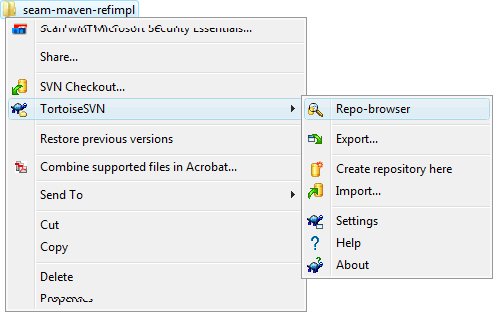

Getting Started
The getting started tutorial outlines the necessary steps to get a Mavenized Seam project up and running on a JBoss Application Server (JBoss-4.2.3.AS or Jboss-5.0.x.AS).
You must have a basic understanding of JBoss Seam (EJB3, JPA, JSF, EL), the JBoss application server, Maven and the DBMS of your choice, e.g. MySql5, to follow this tutorial.
Shortcuts
The shortcuts are listed here so we don't have to type the tedious file paths over and over again in this document.
${JBOSS_HOME}- refers to Jboss installation folder, e.g. C:\servers\jboss-4.2.3.GA${JBOSS_CONFIG}- refers to the configuration directory e.g. C:\servers\jboss-4.2.3.GA\default${JBOSS_DEPLOY}- refers to the JBoss deploy folder, e.g. C:\servers\jboss-4.2.3.GA\default\deploy${PROJECT}- the project root folder, i.e. seam-maven-refimpl${SEAM_REFIMPL}- the folder where the reference project, i.e. seam-refimpl, is installed on your computer${SEAM_TUTORIAL}- the folder where the tutorial project, i.e. seam-tutorial, is installed on your computer
Download and Install Software
- jdk-5 or jdk-6
- Maven 2.0.9 or later.
Note: Do not use Maven 2.1.0, it has a serious bug, see the${PROJECT}/doc/maven-2.1.0-bugfolder for an explanation.
-
Tortoise SVN or a SVN client of your choice.
Note: The svn client must be compatible with SubClipse-1.6.x if you are using the Eclipse IDE. -
Jboss 4.2.3.GA Application Server or later.
Note: Download a build that corresponds with your installed jdk.
Install the required software.
Check Out, Install and Run the Project
The example uses Tortoise SVN to check out the project.
Note: If you downloaded this project as a zip-file then unzip the file to a folder
of your choice and jump to step 4 of this section.
- In file explorer right click on the folder where you want to check out the project and select
TortoiseSVN > Repo-browserfrom the menu.  -
Navigate to http(s)://seam-maven-refimpl.googlecode.com/svn/trunk.

- Checkout trunk.
- Right click trunk and select checkout... from the menu.
- Modify the checkout directory name if desired.
- Click the OK button to check out the project.

-
Navigate to
${SEAM_REFIMPL}using a command shell and run:mvn clean install - Copy
${SEAM_REFIMPL}/ear/target/seam-refimpl-ear.earto the${JBOSS_DEPLOY}folder. - Start JBossAS
JBoss AS runs on port 8080, so first ensure this port isn't already in use (be aware that Apache Tomcat also runs on port 8080 by default). In your command shell, navigate to${JBOSS_HOME}/bin. If you're using a Unix platform, execute the command:
./run.sh
On Windows, execute the command:
run - Open a browser and point the URL to
http://localhost:8080/seam-refimpl
After logging in, your welcome screen should look like this:
 The User Registration page should look something like this:
The User Registration page should look something like this:

Switch to Development Mode
The application will be deployed as an exploded EAR archive when you switch to development mode.
-
Activate
profiles.xml- Copy
${SEAM_REFIMPL}/config/profiles/profiles.xmlto${SEAM_REFIMPL}. - Cd to to
${SEAM_REFIMPL}and editprofiles.xml. -
JBoss profile
Locate theas-jboss423profile and point theas.homeproperty to your${JBOSS_HOME}folder.<!-- jboss-4.2.3 --> <profile> <id>as-jboss423</id> <activation> <property> <name>as</name> <value>jboss423</value> </property> </activation> <properties> <as.home>C:/jboss-4.2.3.GA</as.home> <as.deploy>${as.home}/server/default/deploy</as.deploy> </properties> </profile> -
Locate the
<activeProfiles>tag and check that the following profiles are active:<activeProfiles> <activeProfile>ds-hsqldb</activeProfile> <activeProfile>as-jboss423</activeProfile> <activeProfile>env-dev</activeProfile> </activeProfiles>
-
Use a command shell and run:
mvn help:active-profilesand verify that profiles are active in your parent pom.C:\ide\projects\ok\seam-refimpl>mvn help:active-profiles [INFO] Scanning for projects... [INFO] Reactor build order: [INFO] seam-refimpl-parent [INFO] seam-refimpl-ejb 1.0-SNAPSHOT [INFO] seam-refimpl-war 1.0-SNAPSHOT [INFO] seam-refimpl-ear 1.0-SNAPSHOT [INFO] Searching repository for plugin with prefix: 'help'. [INFO] ------------------------------------------------------------------------ [INFO] Building seam-refimpl-parent [INFO] task-segment: [help:active-profiles] (aggregator-style) [INFO] ------------------------------------------------------------------------ [INFO] [help:active-profiles] [INFO] Active Profiles for Project 'no.knowit.seam:seam-refimpl:pom:1.0-SNAPSHOT': The following profiles are active: - ds-hsqldb (source: profiles.xml) - as-jboss423 (source: profiles.xml) - env-dev (source: profiles.xml)
-
Run:
mvn help:effective-pomand verify that the following properties reflects the active profiles.. . <properties> . . <as.home>C:/jboss-4.2.3.GA</as.home> <ds>hsqldb</ds> <as.deploy>C:/ide/server/jboss-4.2.3.GA/server/default/deploy</as.deploy> <env>dev</env> <jdk.optimize>false</jdk.optimize> <jdk.debug>true</jdk.debug> <env.unpack.modules>true</env.unpack.modules> <app.context>seam-refimpl</app.context> . . </properties> </project>
- Copy
-
Deploy the exploded EAR to the application server.
- Run:
mvn clean install -Pexplode - It is important to clean the target after switching to development mode.
Your${JBOSS_DEPLOY}folder should now contain the exploded EAR project:
- Run:
-
Start JBossAS
Navigate to${JBOSS_HOME}/binusing a command shell and type:run - Open a browser and point the URL to
http://localhost:8080/seam-refimpl
After logging in, your welcome screen should again look like this:
The User Registration page should look something like this:
Activate a Database Profile
At some point in time you will want to access data in a database other than the default Hypersonic
database provided with the JBoss Application Server and you will require some mechanism to do this.
The *-ds.xml file located in ear/src/main/resources defines a data source,
which is used to access data in a database. These steps explains how to use MySql5 as your data
source.
- Download and install necessary software:
- Copy mysql-connector-java-*-bin.jar to
${JBOSS_CONFIG}/lib(delete any other mysql-connector-java-*-bin.jar file if exist). -
Start the database server and create schema
"refimpl_db", use e.g. the MySql Administrator GUI.
Or, if you are a MySql macho, you can type the following SQL DDL by hand:
CREATE DATABASE refimpl_db CHARACTER SET utf8 COLLATE utf8_general_ci;
Note: Allways use UTF8 for i18n. -
Edit
profiles.xml.
Locate theds-mysql5profile and modify thedsproperties as needed.<!-- MySql5 --> <profile> <id>ds-mysql5</id> <activation> <property> <name>ds</name> <value>mysql5</value> </property> </activation> <properties> <ds>mysql5</ds> <ds.hibernate.dialect>org.hibernate.dialect.MySQL5InnoDBDialect</ds.hibernate.dialect> <ds.driver.class>com.mysql.jdbc.Driver</ds.driver.class> <ds.connection.url>jdbc:mysql://localhost:3306/${app.database.name}?characterEncoding=UTF-8</ds.connection.url> <ds.user.name>root</ds.user.name> <ds.password></ds.password> </properties> </profile>Locate the<activeProfiles>tag and activate theds-mysql5profile.<activeProfiles> <activeProfile>ds-mysql5</activeProfile> <activeProfile>as-jboss423</activeProfile> <activeProfile>env-dev</activeProfile> </activeProfiles> -
Run:
mvn package -Pexplode
The properties defined in the active database profile will be filtered into the*-ds.xmlfile during packaging of the project. - Restart the server and point your browser to http://localhost:8080/seam-refimpl
- If nothing went wrong :o)
Clean and Unexplode the Project
To finish the basic steps of this tutorial we will clean the project and see to that the project is completly removed from the application server.
When you switch profiles, it's a good idea to run mvn clean -Punexplode
prior to running mvn install -Pexplode to be sure that settings from
the previous profile do not linger.
- Shutdown JBossAS before cleaning the project:
Navigate to${JBOSS_HOME}/binusing a command shell and type:shutdown -Sor press Ctrl+C from the command shell that started the server. -
In the projects command shell run:
mvn clean -Punexplode -
The
unexplodeprofile takes care of removing the exploded project from the server. Just verify that theseam-refimpl-ear.earfolder actually is deleted from the${JBOSS_DEPLOY}folder. - This completes the basic steps of the tutorial!
Use the seam-refimpl Project as a Template for Your Own Project
Follow these steps to use the seam-refimpl project as a template for your own
project.
Note: If you downloaded this project as a zip-file then unzip the file to a folder
of your choice and jump to step 2 in this section.
- Export from svn.
- Right click the ${PROJECT} folder and select TortoiseSVN > Repo-browser from the menu.
- In repo browser right click the
seam-refimplfolder and selectexport... - Select Export directory and click OK

- Modify the poms:
-
The root pom:
<groupId>no.company.seam</groupId> <artifactId>seam-tutorial</artifactId> <version>0.1-SNAPSHOT</version> <description>The Seam Tutorial parent pom</description> . . <properties> <app.context>seam-tutorial</app.context> <app.display.name>Seam Tutorial</app.display.name> <app.description>The Seam Tutorial uses seam-refimpl as a project template</app.description> <app.database.name>refimpl_db</app.database.name> . . </properties> . </project> -
The EAR pom:
<parent> <groupId>no.company.seam</groupId> <artifactId>seam-tutorial</artifactId> <version>0.1-SNAPSHOT</version> </parent> <artifactId>seam-tutorial-ear</artifactId> <description>The Seam Tutorial EAR module</description> -
The EJB pom:
<parent> <groupId>no.company.seam</groupId> <artifactId>seam-tutorial</artifactId> <version>0.1-SNAPSHOT</version> </parent> <artifactId>seam-tutorial-ejb</artifactId> <description>The Seam Tutorial EJB module</description> -
The WAR pom:
<parent> <groupId>no.company.seam</groupId> <artifactId>seam-tutorial</artifactId> <version>0.1-SNAPSHOT</version> </parent> <artifactId>seam-tutorial-war</artifactId> <description>The Seam Tutorial WAR module</description>
-
The root pom:
-
Rename the datasource file
ear/src/main/resources/seam-refimpl-ds.xmltoseam-tutorial-ds.xml
Tip: Modify the<app.ds.xml>${app.context}-ds.xml</app.ds.xml>property if you want to give the datasource file a different name. - Deploy the project "out of the box" to verify that everyting works
- Switch to development mode
- Activate a Database Profile.
-
How to deploy the data source.
You can deploy the*-ds.xmldata source file in two ways: embedded in the ear project or as a separate service deployed to the${JBOSS_DEPLOY}folder. The default for this build is to embed the*-ds.xmldata source in the ear project.
If you want to deploy the*-ds.xmldata source as a separate service then open the ear pom and make the changes emphasized in blue.
-
Locate the explode and unexplode profiles:
<profiles> <profile> .. <id>explode</id> .. <build> <plugins> <plugin> <artifactId>maven-antrun-plugin</artifactId> <executions> <execution> <id>package</id> <phase>package</phase> <configuration> <tasks> .. <!-- Uncomment if you want to deploy the *-ds.xml file to appserver deploy folder --> <copy todir="${as.deploy}" file="${project.build.directory}/${app.ds.xml}" verbose="true" /> </tasks> </configuration> .. </profile> <profile> .. <id>unexplode</id> <build> <plugins> <plugin> <artifactId>maven-antrun-plugin</artifactId> <executions> <execution> <id>clean</id> <phase>clean</phase> <configuration> <tasks> .. <!-- Uncomment if you have deployed the *-ds.xml file to appserver deploy folder --> <delete file="${as.deploy}/${app.ds.xml}" quiet="true" /> </tasks> </configuration> .. </profile> </profiles> -
Locate the Maven resources plugin with execution id
copy-app-ds-xml:<plugins> <plugin> <groupId>org.apache.maven.plugins</groupId> <artifactId>maven-resources-plugin</artifactId> <executions> <execution> <id>copy-app-ds-xml</id> .. <configuration> <!-- Comment out this tag if you have deployed the *-ds.xml file to appserver deploy folder <outputDirectory>${project.build.directory}/${project.build.finalName}</outputDirectory> --> <!-- Uncomment this tag if you have deployed the *-ds.xml file to appserver deploy folder --> <outputDirectory>${project.build.directory}</outputDirectory> <resources> <resource> <directory>src/main/resources</directory> <filtering>true</filtering> <includes> <include>${app.ds.xml}</include> </includes> </resource> </resources> </configuration> </execution> </executions> </plugin> .. -
Locate the Maven EAR plugin:
.. <!-- Maven EAR plugin --> <plugin> <groupId>org.apache.maven.plugins</groupId> <artifactId>maven-ear-plugin</artifactId> <configuration> .. <jboss> .. <!-- Comment out this tag if you have deployed the *-ds.xml file to appserver deploy folder <data-sources> <data-source>${app.ds.xml}</data-source> </data-sources> --> </jboss> .. </configuration> </plugin> ..
-
Locate the explode and unexplode profiles:
-
Open a command shell and navigate to the
${SEAM_TUTORIAL}folder.-
Run:
mvn clean package -Pexplode(ormvn clean install -Pexplode) - It is important to clean the target after switching to development mode.
Your${JBOSS_DEPLOY}folder should now contain the exploded EAR project:
-
Run:
- Start JBoss, open browser, etc...
Tips for Debugging
When your application starts up it will print all components being created (Seam and your own) and the context they are placed in. Validate that your new component is displayed as well.
Seam has a debug page showing useful information. To use it, add the following dependency to your war
pom.xml:
<dependency>
<groupId>org.jboss.seam</groupId>
<artifactId>jboss-seam-debug</artifactId>
<version>${jboss.seam.version}</version>
</dependency>
In profiles.xml make shure that the jdk.debug property value is
true:
Open your browser and point to the following URL to see the debug page. http://localhost:8080/seam-refimpl/debug.seam
Maven Project Structure
The Seam Refimpl project is a standard Maven multimodule project for Seam using EJB and JSF that is archived in an ear-archive. A parent project pom will manage our EAR, EJB and WAR modules. Xebia Labs has an excellent blog that explainins the Maven project structure for an enterprise application project using Seam: Configuring a Seam EJB project for development with Maven and JBoss Tools.
The Parent POM
The profiles.xml file
The WAR pom
The EJB pom
The EAR pom
Files To Add To Svn Ignore
Some files and folders, like user spesific settings and generated files shall not be under revision control. The following folders and files are added to svn ignore.
-
In ${SEAM_REFIMPL} folder
- appClientModule/
- .classpath
- .externalToolBuilders/
- *.launch
- .metadata/
- profiles.xml
- .project
- .settings/
- target/
-
In ${SEAM_REFIMPL}/ear folder
- .externalToolBuilders/
- .settings/
- target/
- .classpath
- .project
- *.launch
-
In ${SEAM_REFIMPL}/ejb folder
- .checkstyle
- .externalToolBuilders/
- .settings/
- target/
- .classpath
- .project
- hibernate-console.properties
- *.launch
-
In ${SEAM_REFIMPL}/war folder
- .checkstyle
- .externalToolBuilders/
- .settings/
- target/
- .classpath
- .project
- *.launch
- src/main/webapp/WEB-INF/.pages.xml.spdia
- src/main/webapp/WEB-INF/.faces-config.xml.jsfdia
Note: This is the files found so far using Eclipse with the m2eclipse and JBoss Tools plugin. There will be more IDE spesific files to add as other IDEs are put to use. Please take care when files are checked into svn, if you find an IDE spesific file then list it here and add it to svn ignore!